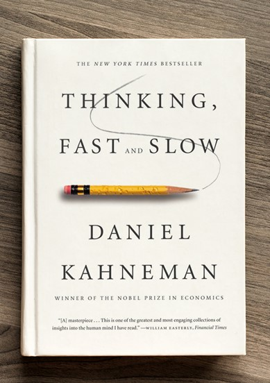
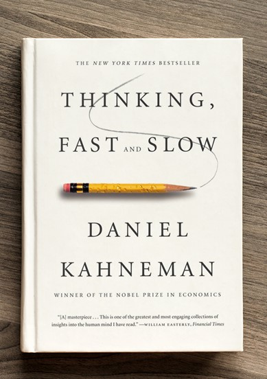

Thinking Fast and Slow by Daniel Kahneman
The riddle of experience vs. memory by Daniel Kahneman
"Every moment in your life is a decision waiting to be made."
D aniel Kahneman is a psychologist and an economist. His famous notable works relate to the psychology of judgment and decision thinking. The first YouTube video “Thinking Fast and Slow l Daniel Kahneman” was posted by Long Now Foundation, which is an American non-profit organization that advocates for “slower/better” thinking versus the “faster and cheaper” mentality. Long Now Foundation invited Daniel Kahneman to give his talk about his book - “Thinking, Fast and Slow” which was published in 2011. He introduced the dual-process model of System 1 and System 2. In the second video, he talks about how cognitive traps can influence the way we think about “happiness”. According to the book and the video about Thinking Fast and Slow, Daniel Kahneman suggested that people often use mental shortcuts that rely on intuition to make judgments and solve problems. It is suggested that system 1 is the one that refers to the quick-thinking process, whereas system 2 is the slow-thinking process, that involves critical thinking (Kahneman, 2011). One of the famous bat and ball problem is also proposed by Daniel Kahneman who suggested that people often use and trust system 1 which elicits intuitive judgment.
“A bat and a ball together cost $1.10. The bat costs $1 more than the ball. How much does the ball cost?”
The most intuitive answer to the question above would be 10 cents, however, it is wrong. The correct answer is 5 cents. One reason people often answer the question wrongly is that people are activating associations memory system, where the ideas are generated through associations memory without intention. This is also known as the activation of System 1 which involves making fast, intuitive decisions, while intuition works unconsciously or subconsciously by blending in the knowledge and experiences that an individual perceives. The idea of 10 cents came to mind and people endorsed it. The endorsement of System 2 did not reject the intuitive answer and chose to use the least effort to answer the questions. People fail to answer the question correctly without processing the system 2 of slowly breaking down the questions to get the correct answer. It is suggested that more than 50% of students at Harvard, MIT answered the questions incorrectly. Daniel Kahneman suggested that people tend to be overconfident and rely too much on their intuition.
"We believe what we see; we believe what we think." – Daniel Kahneman
The visual system allows people to be able to see things and interpret the visual world. Therefore, being able to see things around us is one of the prime examples for every person in System 1, the things we see are processed at a fast and automatic pace and are the characteristics of System 1. He suggested that System 1 is related to the associated memories that are present in our brain or memory system. An analogy is such that there are nodes of networks that are connected in our brains that consist of knowledge in each node. Every detailed knowledge is learned and stored in our memories. In addition, each information that has been learned tends to be distributed as a hierarchical representation. For example, the word yellow could be associated with a banana and a banana is related to another category where a banana is a type of fruit. Therefore, while interpreting the visual information that comes from our environment, a great deal of activation in our mind is processing and sometimes the suppressed activation of other ideas might lead us to different beliefs. Our brains work in a way where some activation activates certain ideas and will inhibit others to allow the usual performance of how a person acts, responds, or thinks. Moreover, how we interpret events or stimuli occurs, tends to be determined by the context. A standard psychological example is “He approaches the bank”. This sentence is ambiguous, the bank can be a financial institution, but in the context of fishing, it is referred to as a riverbank. Daniel Kahneman suggested that people tend to not be aware of alternative interpretations, this is true in perception as well, as the interpretation is chosen by the mechanism and people are not aware of it. Therefore, System 1 leads us to intuitively make impressions and often turns into our own beliefs, so it is important to think twice about making interpretations or decisions about certain things that happen around us. In addition, Daniel Kahneman also mentioned about priming effect in his book “Thinking Fast and Slow”. Nowadays, the principle of priming is used in the industry of advertising in the digital world. Priming can have a significant impact on how consumers perceive and respond to advertisements. Priming in digital advertising can be good because it helps people remember brands and messages, which influences consumer behavior. However, it can also be a disadvantage when the advertisement is used unethically and provides misleading information. Therefore, it is important to be aware of the information we receive around us. In the TED talk video, Kahneman shares about how people perceive happiness between our memories and our experiences. He suggested that people will only enjoy what being happy means by remembering only significant moments or endings of the experience but not the whole experience of what a person felt in a certain context. He compels the distinction between the remembering self and the experiencing self. Kahneman deepens our understanding by discussing a study involving patients undergoing colonoscopies of their painful procedures. The first patient had a shorter and more intense experience, while the second patient endured the same pain but with an additional, less painful time afterward. Even though the second patient suffered more during the procedure and the first patient had a worse memory of the procedure because of its more painful ending, if the procedure is done again, the patient would choose the second procedure because the remembering self perceived a less painful memory. This example reveals that our decision-making often prioritizes the satisfaction of our remembering self, even if it means sacrificing the happiness of our experiencing self in the moment. This conflict between the two selves leads to two different ideas of happiness: one related to the joy of the present moment, and the other tied to the overall contentment we feel when we look back on our lives. Kahneman also suggested that we should maximize happiness, by recognizing and understanding how experiencing self and remembering self play different roles. This dual perspective emphasizes the need to find a balance between these two facets to lead a more fulfilling and meaningful life. In simpler terms, it's important to enjoy the moment and think about long-term happiness. Moreover, time plays a crucial role in determining what contributes to a fulfilling life and in finding opportunities to enjoy the things you do. Experiences often encompass both emotions and memories. Kahneman suggested that emotion and associative memories are correlated which explains our deepest beliefs and would affect how people perceive things. Thus, Kahneman implies that people only tend to remember a certain part of their experience and it becomes part of our memories. Based on that part of the memories, people subconsciously or unconsciously make decisions using the system 1. This could also relate to the hot cognition hypothesis which suggests that decisions are made based on our perceptions and are influenced by our emotional state. However, experiences shape a person's personality and identify who they are or what they want in life. Decision-making happens almost in every moment of our lives. We can decide what we to get in life and experience them by either choosing based on our emotions or our logical reasoning.